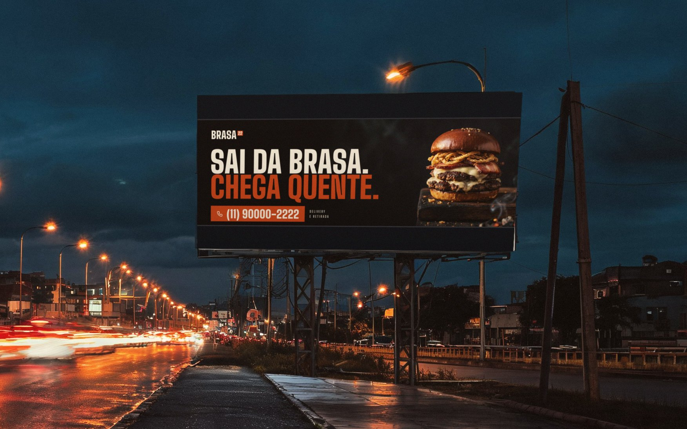
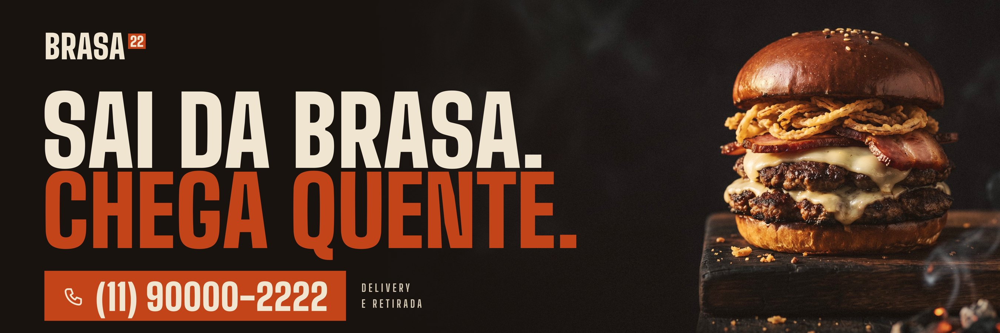
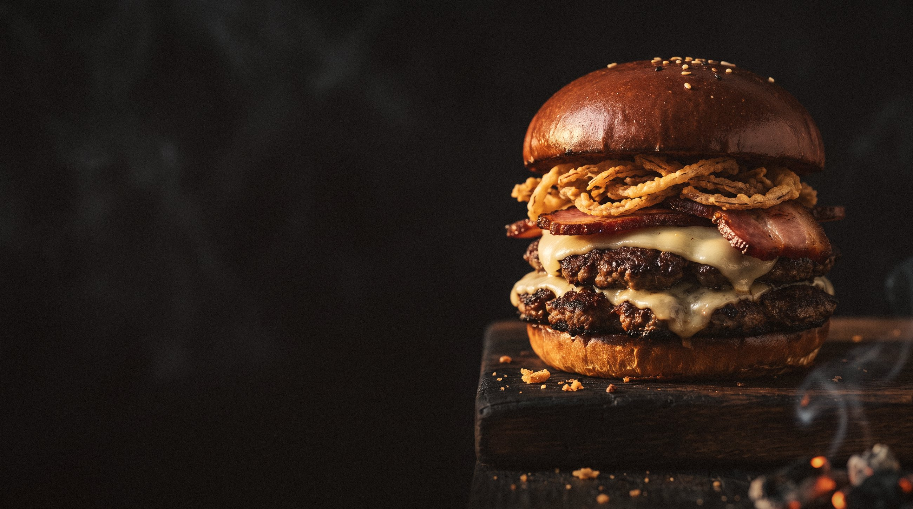
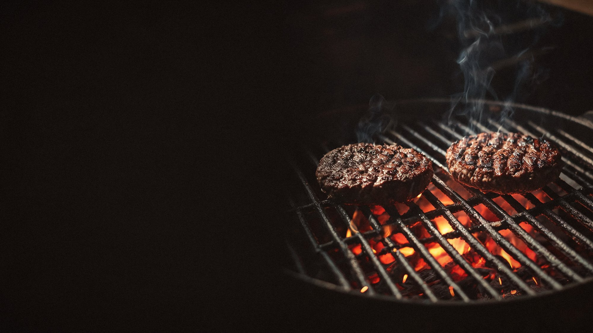

Cinco palavras, um telefone e um hambúrguer do tamanho da placa. A mesma campanha desce para os banners da loja virtual, no desktop e no celular.

Título à esquerda, sobre fundo liso, onde nada atrapalha a leitura. A foto fica com a metade direita e o telefone ganha uma faixa de cor própria.

"Sai da brasa. Chega quente." cabe nos 3 segundos de quem passa a 60 km/h. A regra é até 7.
As maiúsculas do título têm cerca de 60 cm na placa real: leitura confortável a mais de 100 m.
Margem de segurança de 5% em volta e sangria de 5 cm no PDF em escala 1:10, com marcas de corte.
Reduzo a arte até o tamanho que ela tem no olho do motorista. Se o título e o telefone ainda leem, a peça está aprovada.
No desktop, o burger da casa com preço e botão. No feed e no celular, o título da rua com o telefone. Botão e preço sempre dentro da área segura.
Uma foto principal com espaço vazio à esquerda, pensada para receber o título. Mesma luz lateral quente do cardápio, para a campanha inteira parecer uma sessão só.


As fotos (inclusive a da rua usada no mockup) foram geradas com IA (Tripo) só para este projeto demonstrativo. Num projeto real, uso fotos do produto do cliente e a foto do ponto onde a placa fica.